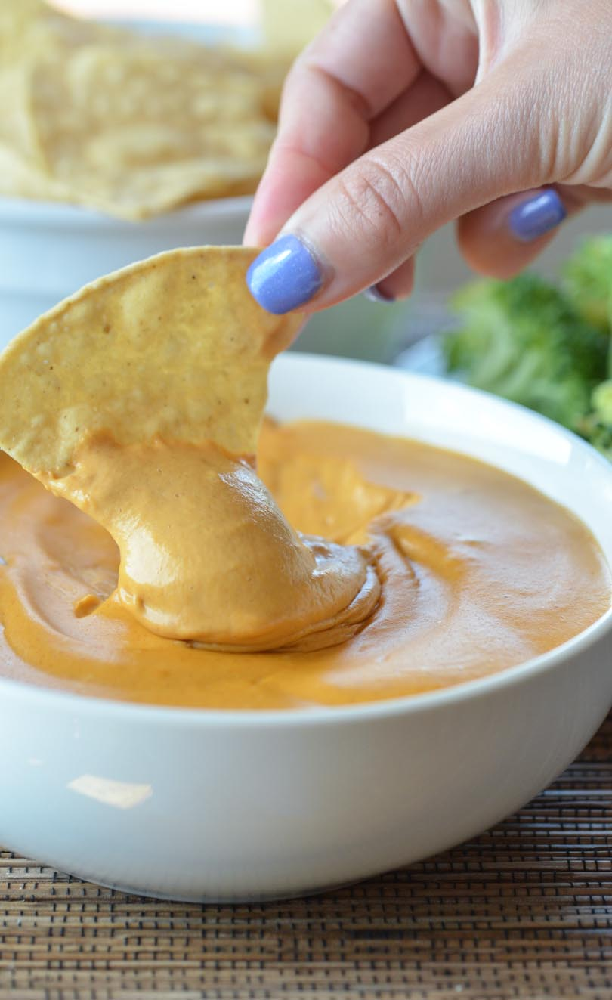

Description
This Vegan Nacho Cheese Dip may be the best Vitamix recipe ever
Ingredients
- almond milk - 1 cup (240 mL)
- nutritional yeast - 1/4 cup (20 g)
- raw almonds - 1/2 cup (70 g)
- raw, unsalted cashews - 1/2 cup (65 g)
- red bell pepper (de-seeded) - 1 whole
- salt - 1.5 tsp (8 g)
- garlic powder - 1/2 tsp (1.5 g)
- onion powder - 1 tsp (2.5 g)
- 1 tablespoon lemon juice
- crushed red pepper - a few shakes (to taste)
Steps
-
Add liquid ingredients to your Vitamix.
-
Then add rest of ingredients.
-
Start blender on low, ramp to high.
-
Blend on high for 6 minutes (or use preprogrammed 'Soup' setting).
-
Snap a pic and tag #lifeisNOYOKE
-
Be really happy.
Back to main page